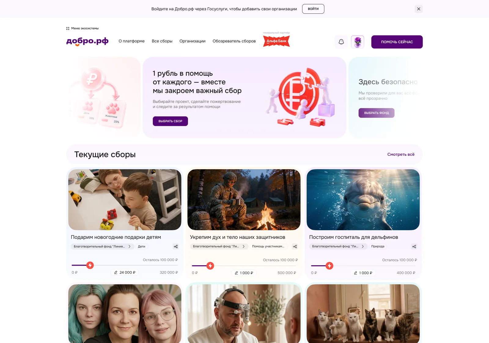
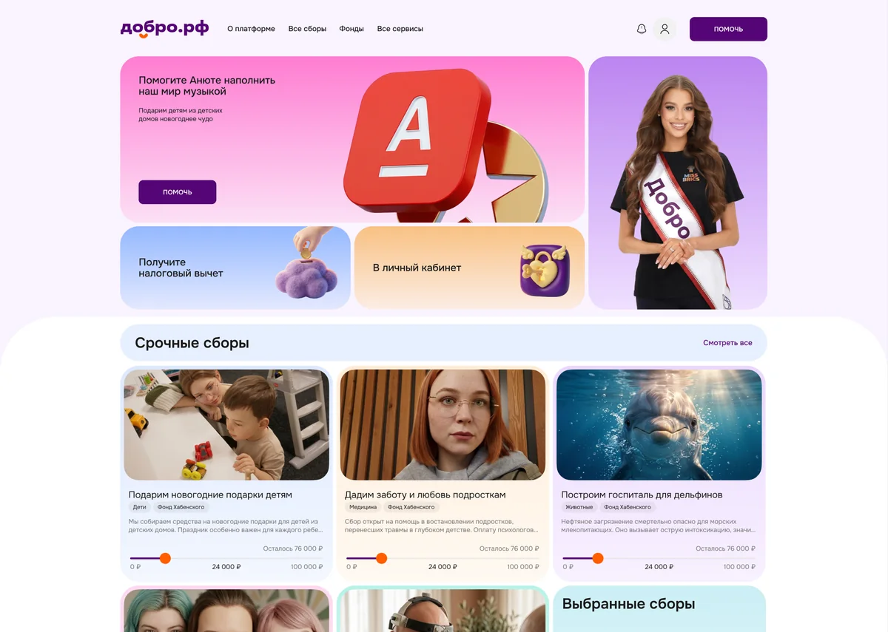
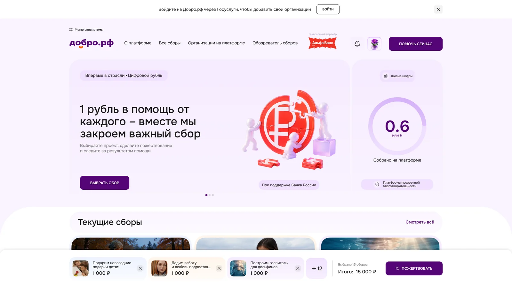
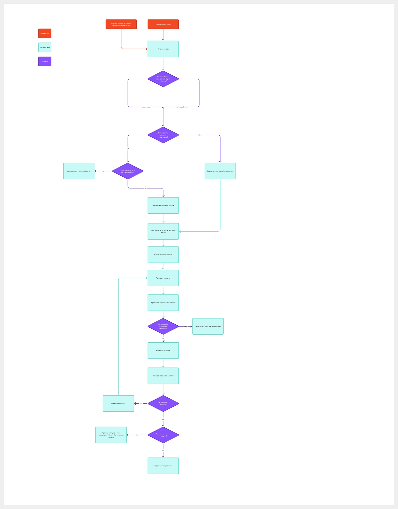

Lead UX/UI Designer · Freedom International Group · 2026
Добро.рф
Платформа пожертвований
для доноров и НКО
- Конверсия в донат
- 1,1% → 1,3%
- CTR баннеров
- 1,7% → 2,1%
- Мой вклад
- UX/UI с нуля, исследования,
дизайн-система и дизайн-QA
Результаты пилота для волонтёров и проверенных доноров фондов-партнёров, до и после изменений.

Задача
Дать донорам возможность поддерживать несколько сборов за одну оплату, а НКО — создавать сборы и отчитываться о пожертвованиях.
За что отвечал
Спроектировал публичный сервис, кабинеты доноров и НКО, админку. Проработал регулярные пожертвования, цифровой рубль, верификацию и отчётность.
Переработал главную после исследований
В Pathway 70 участников не поняли, что делать дальше. После анализа теста и CustDev изменил первый экран, подачу сборов и переход к пожертвованию.



Показал состав пожертвования до оплаты
В корзине сразу видны выбранные сборы и суммы. Вариант с превью получил 106 из 168 ответов на вопрос об удобстве — 63,1%.

Управление суммой
Продумал ручное изменение суммы, удаление сбора и возврат к выбору. Пользователь может исправить пожертвование перед оплатой.
Дизайн-система с нуля
Создал компоненты, состояния и адаптивы для платформы и кабинетов. Сохранил преемственность экосистемы и проработал кобрендинг с Альфа-Банком.
Проработал весь путь до оплаты
В User Flow связал одиночный донат и мультидонат, редактирование корзины, возвраты и ошибки. По схеме согласовывал логику с аналитиками и разработчиками до детализации экранов.

Исследования и измерения
Pathway: 237 завершённых анкет
Подготовил сценарный тест интерактивного прототипа: от выбора сборов до шага оплаты без списания денег. Плановая выборка — 250 человек, получено 237 завершённых анкет.
Что проверял
- Находят ли люди мультидонат без подсказки.
- Могут ли распределить 1 200 ₽ между тремя сборами.
- Как удаляют сбор и меняют сумму перед оплатой.
Что предусмотрел в ТЗ
- События слайдера, ручного ввода, корзины и оплаты.
- Записи сессий, карту кликов, ошибки и возвраты.
- Диагностическую волну и повторную проверку после правок.
Критерии успеха, заданные до теста
70–75% проходят основной сценарий без критической ошибки; 80% верно понимают итоговую сумму; 60% самостоятельно собирают 2+ сбора. Слайдер принимают за прогресс-бар не более 20% участников.
Что изменилось в дизайне
70 участников не поняли следующий шаг. Переработал связь выбора сбора, суммы и корзины и подготовил варианты для отдельного сравнения.
Корзина: сравнение трёх вариантов
В форме — 182 ответа. На вопрос об удобстве получено 168 ответов. Вариант с превью выбранных сборов получил больше всего предпочтений.
| Критерий | Выбрали корзину с превью |
|---|---|
| Удобство пожертвования | 106 / 168 · 63,1% |
| Понятно, что сборы добавлены | 114 / 166 · 68,7% |
| Заметность кнопки пожертвования | 92 / 168 · 54,8% |
| Понятна итоговая сумма | 97 / 168 · 57,7% |
Сравнивали восприятие макетов. Результат помог выбрать корзину для дальнейшей проработки; рост конверсии оценивали отдельно в пилоте.
CustDev: участие и изменения главной
Участвовал в формировании критериев исследования, модерации и предложениях по интерфейсу. После анализа выводов переработал главную страницу.
Исследование проводили совместно с командой и коллегами из Добро.рф. Моя зона ответственности — перевести выводы в сценарии и дизайн.
Баннеры: 204 голоса
Сравнили три визуальных варианта. Третий получил 94 голоса (46,1%), первый — 68 (33,3%), второй — 42 (20,6%).
В ответах отмечали доверие, информацию о проверенных фондах и понятную визуальную подачу. Голосование помогло выбрать направление; кликабельность баннеров измеряли после изменений продукта.
Продуктовые и маркетинговые метрики
Цели: увеличить долю посетителей, завершающих пожертвование, и кликабельность баннеров. Дополнительно в сценарном тесте проверял успешность мультидоната, понимание суммы и ошибки до оплаты.
| Метрика | До | После | Изменение |
|---|---|---|---|
| Конверсия посетителя в донат | 1,1% | 1,3% | +0,2 п. п. |
| CTR баннеров | 1,7% | 2,1% | +0,4 п. п. |
Сравнение до и после изменений на ограниченной пилотной аудитории. Результат совместной работы команды; отдельный эффект дизайна не изолирован.
Согласования и передача в разработку
Защищал решения перед руководством государственных структур, Банка России и Альфа-Банка. С аналитиками и разработчиками согласовывал объём MVP и ограничения Госуслуг, Alfa ID, KYB и СБП.
Проводил дизайн-ревью реализации: проверял сценарии, состояния компонентов и адаптивы, согласовывал исправления.